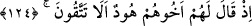
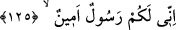

139. Böylece onu yalancılıkla suçladılar; Biz de kendilerini helâk ettik. Doğrusu
bunda büyük bir ibret vardır; ama çokları iman etmezler.
140. Şüphesiz Rabbin, işte O, mutlak galip ve engin merhamet sahibidir.
Âd ismi, kâbîle olduğu dikkate alınarak müennes kabul edilmiştir. Bu isim, onların en
büyük atalarının ismidir.
Mukâtil der ki: “Âd ve Semûd, birbirlerinin amca çocuklarıydılar. Âd, Hûd (a.s.)’ın
kavmi, Semûd ise Salih (a.s.)’ın kavmi idiler. Âd ile Semûd kavminin helâkları
arasında beş yüz yıl vardı.”
Tarihçilerden bir kısmı, Âd ve Semûd’un Nuh (a.s.) oğlu Sâm oğlu İrem’ın
evlâtlarından iki kardeş olduğunu söylerler. Sâm b. Nûh’un beş çocuğu vardı. Bunlar,
İrem, Arfehşed/Arpakşat, Âlem/Elam, el-Yafer ve Asur. İrem/Aram, kardeşlerin en
büyüğüydü ve onun da yedi oğlu vardı: Âd, Semûd, Sahar, Tanem, Cedis, Casim ve
Vebar. Âd ve çocuklarının yurtları Yemen, Semûd ve çocuklarının yurdu Hicaz ve Şam
arasındaki bölge, Tanem’in yurdu Umman ve Bahreyn, Cedis’in vatanı Tihâme bölgesi,
Sahar’ın meskeni Taif ile Tayy dağlarının arasındaki yer, Câsim’in yurdu Harem ile
Sefevân arasındaki bölge, Vebâr’ın vatanı ise kendi adına nisbetle Vebâr denilen
bölgedir. Bunların tamamının dilleri Arapçadır. Bunların hepsinin arkası kesildi ve
nesilleri kalmadı.
124. Kardeşleri Hûd onlara şöyle demişti: (Allah’a karşı gelmekten) sakınmaz
mısınız?
Neseb bakımından “Kardeşleri Hûd onlara şöyle demişti:”
Hûd (a.s.), Nûh oğlu Sâm oğlu Arfehşed/Arpakşat oğlu Şâleh oğlu Hûd’dur. Bazıları
demiştir ki: Hûd (a.s.)’ın ismi, Âbir idi. Vakar ve sükûnet sahibi olduğu için “Hûd”
diye isimlendirildi. Yüz elli sene yaşadı. Kırk yaşına ulaşınca Âd’ın evlatlarına
peygamber olarak gönderildi.
Allah Teâlâ’dan/O’na karşı gelmekten “sakınmaz mısınız?” ki bu yaptıklarınızı
yapıyorsunuz. Acaba şirkten kaçınmaz mısınız ve ilâhî azab ve cezadan korkmaz
mısınız?
125. Bilin ki, ben size gönderilmiş güvenilir bir elçiyim.